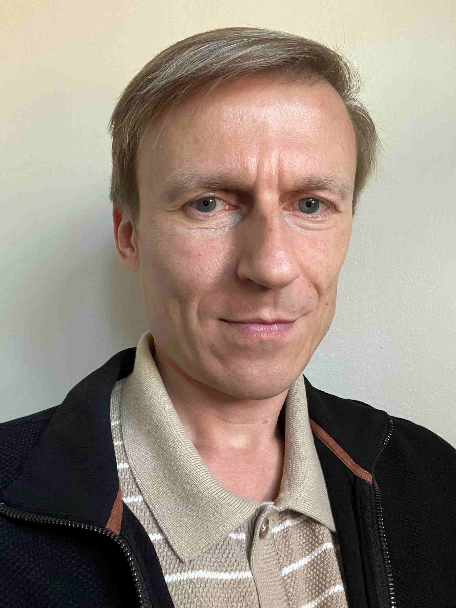

Hi, I'm Alexander Borochkin!
I have professional experience in data analytics, machine learning, cloud computing in Natural Language Processing. I have several research papers and patents. I am self-educated in Computer Science and I have Phd. in Business Administration from Università della Calabria, Phd. in Finance and Credit from Nizhni Novgorod State University.
Education
- Professional Certificates in Computer Science, 2018-2023
- Phd. Business Administration, Università della Calabria, 2002
- Phd. Finance and Credit, Nizhni Novgorod State University, 2002